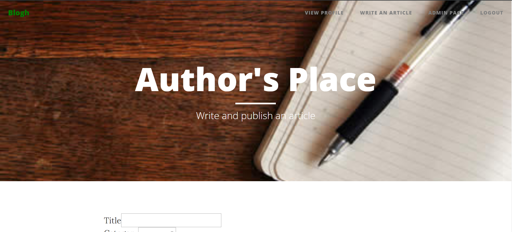
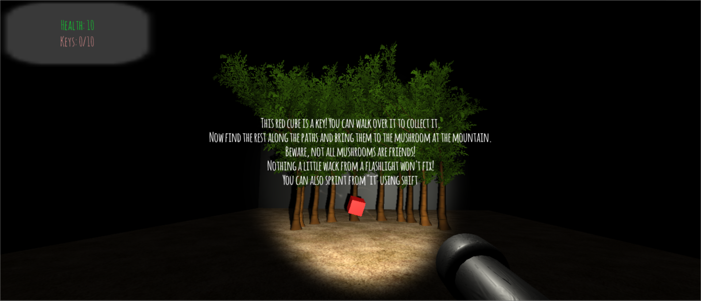
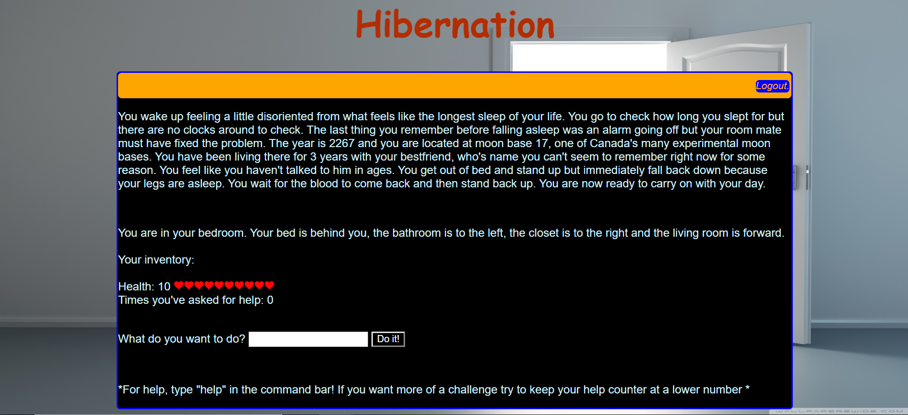

University of Waterloo - Systems Design Engineering
About Me
A student at the University of Waterloo currently working towards my bachelor of Engineering in Systems
Design Engineering.
Always looking for new experiences where I am able to learn new, relevant, and applicable skills.
Passionate about creativity, design, and building things.
Athletic and especially enjoy playing sports! I have played on many intramural teams at UW including Hockey, Soccer,
Indoor Volleyball, Beach Volleyball, Flag Football and Ultimate Frisbee.
Love outdoor activities and think that there is no where better to be than on the water.
A self-taught guitar player and mostly play any songs that I'm enjoying at the time.
Obsessed with listening to music and always trying to explore new genres, but my go to genres are
rock, folk, and indie.
Projects
Shottle
A bottle that is meant to reduce alcohol consumption and increase water intake when drinking at social events.
The bottle has two compartments, one for alcohol and one for water.
The lid has to be held on the alcohol compartment or else a spring will force the opening to spin back
to the water compartment.
Our design team started off with defining our problem space, creating personas, and brainstorming ideas.
Once we had our bottle idea, we followed an iterative design process by first creating a low-fidelity prototype then conducted user testing.
Adjustments were made and this process was replicated for a medium-fidelity prototype.
The high fidelity prototype was then designed in Solidworks by myself and another team member, and printed using a 3D printer.
Final user testing was finally conducted.
Components of the High Fidelity Prototype Including the Bottle and a Two-Piece Lid
Guitar Hero
Recreation of Guitar Hero using two breadboards and an Arduino Uno.
One breadboard/circuit has 4 sets of 4 different coloured LEDs.
A signal is sent from the Arduino to the first set of LEDs, causing them to light up. That signal is then stored in a register.
When the next signal comes in from the Arduino, the second set of LEDs illuminate with the first signal pattern
and the first set of LEDs illuminates with the new signal pattern. This progression of signals continues until the game ends.
The bottom set of LEDs is the set of lights that the player has to match.
The other circuit has 4 buttons, each matching a correspondingly coloured LED. The player has
to press the correct combination of buttons to match the fourth set of LEDs, or the ones closest to the player.
The button combination is input into the Arduino, where an interrupt checks whether it corresponds
to the signal. The combination of notes is audibly played if the input is correct, and an ugly noise is played
if the input is incorrect.
The streak of correct notes in a row is displayed in a console window, and the high score is
kept track of and updated.
Circuit that Displays Which Notes Need to be Played
Blogh
A PHP blog platform with a MySQL database.
Users can create an account and are given basic access. There are also Author accounts and Admin
accounts, which have access to more pages.
Home Page
Home Page Scrolled Down, Showing List of Blogs
Author's Page

Profile Editing Page
Admin's Page For Editing Articles
You Can’t Hide
A 3D Unity Horror Game inspired by Slenderman.
I created the game flow, designed the atmosphere, wrote the story, and developed scripts in C#.
The player must run around in the woods collecting red cubes and fighting off evil mushrooms.
Every once and a while a larger monster will find the player and they must run for their life.
Collect all 10 cubes and take them to the one friendly mushroom at the mountain to move on to the boss battle.
In the boss battle, the player must collect shots by attacking the mushrooms and shoot them at the monster, which is now the size of a skyscraper.
Opening Scene with Instructions for the Player

Hibernation
A text-based adventure game created with PHP, HTML, CSS, and a MySQL database.
I wrote the narrative, created a story board, designed the game flow, and wrote the code.
Inspired by the classic adventure game Zork.
The player wakes up in their bedroom on a moon base feeling disoriented. They must figure out
what is going on by exploring the base, collecting items, and interacting with objects,
all while staying safe.

Work Experience
Backend Software Developer, XE.com Inc. [May - August, 2019]
Worked on a small team of two dedicated to developing chatbots on Google Dialogflow and Amazon Alexa in Node.js.
Actively sought out work and often created new tickets based on what needed to be done.
Pitched new feature ideas and created prototypes, some of which became fully functioning features.
Learned and executed DevOps practices using Gitlab CI/CD, and Terraform to manage AWS.
Frontend Full Stack Developer, SSIMWAVE [Sept - December, 2018]
Implemented new features and designs for a web application using AngularJS, HTML and CSS.
Worked directly with a designer and other developers to optimize the user experience of the UI.
Created suggestions and recommendations for bettering the application, and followed through with developing them.
Systems Software Developer, XE.com Inc. [January - April, 2018]
Developed projects from scratch, and worked on pre-existing projects, both on the backend and frontend, all in an agile work environment.
Worked solely with new languages, libraries, and frameworks learned on the job, while managing to meet deadlines with constantly changing projects from sprint to sprint.